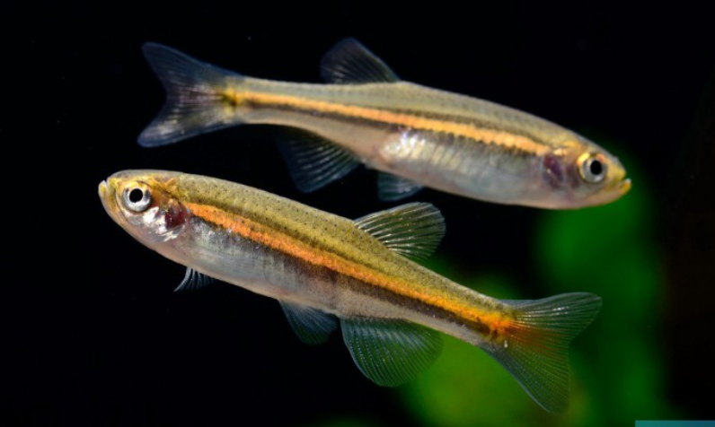

Systématique
- Ordre : Cypriniformes
- Famille : Danionidae
- Genre : Danio
- Espèce : D. jaintianensis

Danio jaintianensis est une espèce de petit cyprinidé décrite relativement récemment (2007) et encore rare en aquariophilie. Il est originaire des collines de Jaintia (Jaintia Hills) en Inde, d'où il tire son nom spécifique.
Il ressemble beaucoup à son cousin Danio dangila, mais s'en distingue par une taille plus modeste, atteignant généralement 4 à 5 cm (contre 8-9 cm pour D. dangila), et par l'absence d'une tache sombre bien définie derrière l'opercule (tache cléithrale).
Sa coloration est argentée à dorée, parcourue de motifs réticulés bleutés ou de lignes brisées sur les flancs, lui donnant un aspect visuel très graphique.
C'est un poisson grégaire qui doit impérativement être maintenu en groupe (banc) d'au moins 8 à 10 individus.
Comme la plupart des Danios, c'est un nageur très actif, rapide et parfois agité, qui occupe la partie supérieure de l'aquarium. Il est paisible envers les autres espèces, à condition qu'elles ne soient pas trop lentes ou timides, car son activité incessante pourrait les stresser. C'est également un excellent sauteur, nécessitant un bac bien couvert.
Mode : ovipare.
C'est un diffuseur d'œufs. La reproduction suit le schéma classique des Danios : les œufs sont dispersés au-dessus du substrat ou des plantes fines. Les œufs sont non adhésifs.
Il n'y a aucun soin parental et les adultes mangent leurs œufs s'ils en ont l'occasion. Une grille de protection au fond du bac de reproduction est souvent nécessaire pour l'élevage.
Dimorphisme sexuel : Les femelles matures sont sensiblement plus rondes et corpulentes que les mâles, qui restent plus sveltes. Les couleurs des mâles peuvent être légèrement plus intenses en période de frai.
Espérance de vie : Estimée entre 3 et 5 ans en captivité.
Il est endémique de l'État du Meghalaya en Inde. Il habite les ruisseaux de colline aux eaux claires et bien oxygénées, avec un substrat composé de graviers, de galets et de roches. Le courant y est modéré à fort.
Répartition

Origine naturelle :
- Asie du Sud.
- Inde : État du Meghalaya.
- Endémique des Jaintia Hills.
Paramètres de maintenance
Température : 18 à 24 °C (espèce subtropicale préférant la fraîcheur).
pH : 6,5 à 7,5.
GH : 5 à 15 °dGH.
Courant : Modéré à fort. Une bonne oxygénation est indispensable.
Volume conseillé : Minimum 80 à 100 L. Bien que petit, c'est un grand nageur qui a besoin d'une façade d'au moins 80 cm pour s'exprimer.
Régime alimentaire
Régime : omnivore à tendance insectivore.
Dans la nature, il se nourrit d'insectes et de larves portés par le courant.
En aquarium, il accepte tout (paillettes, granulés), mais un apport régulier de petites proies vivantes ou congelées (daphnies, artémias, vers de vase) est nécessaire pour sa vitalité.